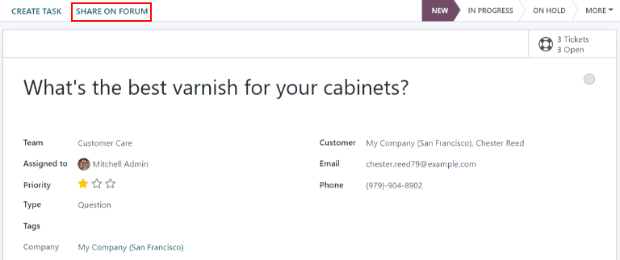
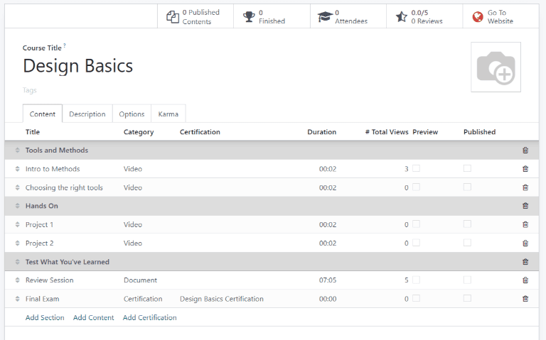

Centro de ayuda¶
Servicio de asistencia de Odoo se integra con las aplicaciones Foro, eLearning e Información para crear el centro de ayuda.

El centro de ayuda es una ubicación centralizada donde los equipos y clientes pueden buscar y compartir información detallada acerca de sus productos y servicios.
Nota
Para activar cualquiera de estas funciones en un equipo de Servicio de Asistencia, (Foro, eLearning o Información), la Visibilidad del equipo tiene que estar establecida en:guilabel:Usuarios invitados al portal y todos los usuarios internos. Para obtener más información acerca de la configuración y ajustes de los equiipos, consulte el documento Fundamentos de Servicio de Asistencia.
Advertencia
Puesto que todas las funciones de centro de ayuda requieren integración con otras aplicaciones, es posible que se instale un módulo o aplicación adicional si activa alguna de ellas.
Al instalar una nueva aplicación en una base de datos Gratis con una aplicación se activa un periodo de prueba de 15 días. Al final del periodo de prueba, si no se ha añadido una suscripción de pago a la base de datos, se desactivará.
Información¶
La aplicación Información de Odoo es una biblioteca colaborativa donde los usuarios pueden almacenar, editar y compartir información. El icono que representa la aplicación en la base de datos es un libro.
Habilitar Información para un equipo de Servicio de asistencia¶
Para activar la función Información en un equipo de Servicio de Asistencia, vaya a y seleccione un equipo o cree uno nuevo.
Cuando selecciona o crea un equipo, Odoo muestra el formulario detallado de ese equipo.
En dicho formulario, baje hasta la sección Autoservicio. Haga clic en la casilla que esta junto a Información para activar la función de Información. Al hacerlo, aparece un nuevo campo llamado Artículo.
Al hacer clic en el campo Arículo, aparecerá un menú desplegable. Al inicio, solo aparecerá la opción de Ayuda en el menú que está de manera predeterminada. Seleccione Ayuda para elegir este artículo.
Truco
Para crear un nuevo artículo, vaya a la y luego coloque el cursor junto al encabezado de la sección Espacio de trabajo, ubicado en la barra lateral izquierda. Al hacerlo, aparecerá un icono escondido de ➕ (signo de más).
Haga clic en el icono ➕ (signo de más) para crear un nuevo artículo en el Espacio de trabajo. En la esquina superior derecha, haga clic en el botón de Compartir y deslice el interruptor de Compartir en la web hasta que aparezca como Artículo publicado. Ahora podrá agregarlo al equipo de Servicio de Asistencia.
Una vez que creó el artículo y lo asignó a un equipo de Servicio de Asistencia, puede agregar y organizar el contenido a través de la aplicación Información.
Ver también
Buscar artículos desde un ticket de Servicio de Asistencia¶
Cuando los miembros de un equipo de Servicio de Asistencia están resolviendo un ticket, pueden buscar en el contenido de la aplicación Información para obtener más datos acerca del problema.
Para buscar artículos en Información, abra un ticket, ya sea desde el tablero de la aplicación Servicio de Asistencia o en , y seleccione un Ticket de la lista.
Cuando selecciona un Ticket, Odoo muestra el formulario detallado del mismo.
Haga clic en el icono de Información (libro), ubicado encima del chatter, para abrir una ventana de búsqueda.

Truco
También puede buscar artículos de Información presionando las teclas Ctrl + K para abrir la paleta de comandos. Luego, teclee ?, seguido del nombre del artículo que desea encontrar.
Cuando Odoo muestra el artículo que desea, haga clic en él o subraye el título del Artículo y presione Enter. Esto abrirá el artículo en la aplicación Información.
Para abrir un artículo en una nueva pestaña, presione las teclas Ctrl + Enter.
Truco
Si necesita una búsqueda más precisa, presione las teclas Alt + B. Esto abrirá una página por separado en dónde puede realizar una búsqueda más detallada.
Resolver tickets con plantillas¶
Puede agregar casillas de plantillas en los artículos de Información para permitir que el contenido se reutilice, se copie, se envíe como mensaje o se añada a la descripción de un ticket. Esto le permite a los equipos ser consistentes al resolver los tickets de los clientes y minimizar el tiempo que pasan respondiendo preguntas repetidas.
Agregar plantillas a los artículos¶
Para crear una plantilla, vaya a . Haga clic en un artículo anidado ya existente o cree uno nuevo haciendo clic en el icono ➕ (signo de más) ubicado a un lado de Ayuda.
Escriba / para abrir la caja de herramientas y ver una lista de comandos. Seleccione o escriba plantilla. Se añadirá un bloque gris de plantilla a la página. Agregue el contenido que necesite en este bloque.

Nota
Las plantillas solo mostrarán las opciones de Usar como descripción o Enviar como mensaje si accede a ellas directamente desde Servicio de Asistencia.
Usar plantillas en los tickets¶
Puede usar las plantillas para responder directamente a un ticket de Servicio de Asistencia como un mensaje o para añadir información a la descripción del ticket.
Para usar plantillas en un ticket de Servicio de Asistencia, abra un ticket, ya sea desde el tablero de Servicio de Asistencia o en y seleccionando un Ticket de la lista.
Haga clic en el icono de Información (libro) ubicado encima del chatter del ticket. Esto abrirá una ventana de búsqueda, en donde podrá seleccionar o buscar el artículo que desee. De esta manera, se abrirá la página del artículo en la aplicación Información de Odoo.
Para usar una plantilla para responder un ticket, haga clic en Enviar como mensaje en la esquina superior derecha de la casilla de la plantilla ubicada en el cuerpo del artículo.
Al hacerlo, se abrirá una ventana emergente para Escribir un correo. Ahí, seleccione el destinatario, añada o edite lo que necesite para esa plantilla, y haga clic en Enviar.
Truco
Para usar una plantilla para añadir información a la descripción de un ticket, haga clic en Usar como descripción ubicado en la esquina superior derecha de la casilla de la plantilla. Esto no reemplazará el texto existente en la descripción de ticket. La plantilla se añadirá como t4exto adicional.
Foro de la comunidad¶
Un Foro de la comunidad le proporciona a los clientes un espacio para responder a las preguntas de los demás y compartir información. Al integrar un foro con un equipo de Servicio de Asistencia, los tickets que suban los clientes pueden convertirse en publicaciones y compartirse.
Active los foros en un equipo de Servicio de Asistencia¶
Para activar los Foros de la comunidad en un equipo de Servicio de Asistencia comience en y seleccione un equipo o cree uno nuevo.
Seleccionar o crear un equipo abrirá el formulario detallado del equipo. Baje hasta la sección de funciones de Autoservicio y active la opción Foro de la comunidad.
Al activarlo, aparecerá un nuevo campo debajo llamado Foros.
Haga clic en el campo vacío de Foros para abrir un menú desplegable. Solo tendrá activada una opción de manera predeterminada llamada Ayuda. Es la opción que crea Odoo automáticamente al activar la función de Foros de la comunidad. Seleccione Ayuda del menú desplegable para activar ese foro.
Para crear un nuevo foro, escriba un nombre en el campo vacío de Foros, luego haga clic en la opción de Crear y Editar. Puede seleccionar varios foros en este campo.
Ver también
Consulte la documentación de Foro para obtener más información sobre configurar, usar y moderar un foro.
Cree una publicación en el foro desde un ticket de Servicio de Asistencia.¶
Cuando se activa un equipo de Servicio de Asistencia en un Foro, los tickets que reciba ese equipo se pueden convertir a publicaciones del foro.
Para hacerlo, seleccione un ticket, ya sea desde el flujo de un equipo o desde en la aplicación Servicio de Asistencia.
En la parte superior del formulario de detalles del ticket, haga clic en Compartir en el foro.
Al hacer clic, aparecerá una ventana emergente. Allí puede editar la publicación o el título para corregir cualquier errata, también puede eliminar cualquier información confidencial o del cliente. Además, puede agregar etiquetas para ayudar a organizar la publicación en el foro, lo que facilita la búsqueda de los usuarios. Cuando haya hecho todos los ajustes, haga clic en Crear y ver publicación.
eLearning¶
Los cursos en la aplicación eLearning de Odoo ofrecen capacitación a los clientes, así como contenido adicional con videos, presentaciones, certificaciones y pruebas. Gracias a esto, los clientes pueden solucionar sus problemas por su cuenta, así como desarrollar una mejor comprensión de los servicios y productos que utilizan.
Habilitar cursos de eLearning para un equipo de Servicio de asistencia¶
Para habilitar cursos de eLearning para un equipo de Servicio de asistencia vaya a , luego seleccione o cree uno nuevo.
En la página de ajustes del equipo, diríjase a la sección Autoservicio y marque la casilla junto a eLearning. Debajo aparecerá un nuevo campo denominado Cursos.
Haga clic en el campo vacío junto a Cursos debajo de la función eLearning para desplegar su menú. Seleccione un curso disponible en el menú desplegable. También puede escribir el título en el campo y hacer clic en Crear y editar para crear un nuevo curso desde esta página. Puede asignar varios cursos a un solo equipo.
Crear un curso en eLearning¶
Puede crear un nuevo curso de eLearning desde la página de ajustes del equipo de Servicio de asistencia como se describió antes o desde la aplicación eLearning.
Para crear un curso desde la aplicación eLearning, vaya a . Aparecerá una plantilla de curso en blanco que puede personalizar y modificar según sea necesario.
En la página de la plantilla del curso, escriba el título del curso y debajo seleccione las etiquetas.
Haga clic en la pestaña Opciones. En los derechos de acceso, seleccione la política de inscripción que determinará qué usuarios podrán tomar el curso. En Mostrar, seleccione el tipo y la visibilidad del curso, la configuración de esta última determina si el curso estará disponible para los visitantes del sitio o los miembros.
Agregar contenido a un curso de eLearning¶
Para agregar contenido a un curso, haga clic en la pestaña Contenido y seleccione Agregar contenido. Elija el tipo de contenido en el menú desplegable y suba el archivo, o pegue el enlace donde corresponde. Haga clic en Guardar cuando haya terminado. Haga clic en Agregar sección para organizar el curso en secciones.
Nota
Para agregar una certificación a un curso, vaya a , seleccione la casilla Certificaciones y guarde para activar este ajuste.
Ver también
Publicar un curso en eLearning¶
Para permitir que los clientes se inscriban a un curso, debe publicar el curso y su contenido.
Si publica el curso pero no su contenido, los clientes pueden inscribirse al curso en el sitio web pero no podrán ver el contenido. Ahora que sabe esto, es posible que lo mejor sea publicar el curso antes si el contenido estará disponible de forma gradual, por ejemplo, si hay clases con un horario semanal.
Para que todo el curso esté disponible, primero debe publicar cada parte del contenido, luego podrá publicar el curso.
Para publicar un curso, elija uno en el tablero de eLearning. En la página de la plantilla del curso, haga clic en el botón inteligente Ir al sitio web.
Se le redirigirá al frontend de la página web del curso. Allí, en la parte superior, mueva el interruptor de Sin publicar a Publicado.
Publicar contenido en el curso de eLearning desde el backend¶
Para publicar el contenido del curso de eLearning desde el backend, elija un curso en el tablero de la aplicación. En la página de la plantilla del curso, haga clic en el botón inteligente Contenidos publicados.
La acción anterior abrirá una página que muestra todo el contenido publicado relacionado con ese curso. Elimine el filtro predeterminado Publicado de la barra de búsqueda en la esquina superior derecha para mostrar todo el contenido relacionado con el curso, incluso el que no está publicado.
Haga clic en el icono ≣ (vista de lista) en la esquina superior derecha, justo debajo de la barra de búsqueda para cambiar a la vista de lista.
Desde la vista de lista podrá observar una casilla de verificación en el extremo izquierdo de la pantalla, arriba de los cursos, a la izquierda de la columna de título. Si hace clic en esa casilla, se seleccionarán todos los contenidos del curso.
Con todo el contenido del curso seleccionado, haga doble clic en cualquiera de las casillas de la columna Está publicado. Aparecerá una ventana emergente que le solicitará que confirme que desea publicar todos los registros seleccionados, presione De acuerdo para publicar todo el contenido del curso en automático.